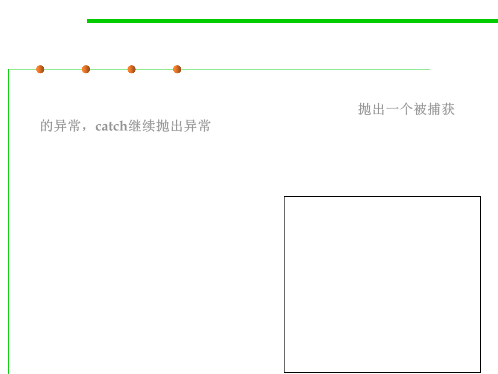

Try-Catch-Finally: case 3
7.2 Error and Exception Handling
▪ Case 3: The code throws an exception that is caught in a catch
clause and the catch clause throws an exception. 抛出一个被捕获
的异常，catch继续抛出异常
– The program executes all code in the try block, up to the point at which
the exception was thrown. The remaining code in the try block is skipped.
The program then executes the code in the matching catch clause, and
then the code in the finally clause.
– If the catch clause throws an
InputStream in = new FileInputStream(. .
.);
exception, then the exception
is thrown back to the caller of
try {
// 1
code that might throw exceptions
this method, and execution
passes through points 1, 3, and 5
// 2
}
catch (IOException e) {
only.
// 3
show error message
// 4
}
Finally {
// 5
in.close();
}
// 6